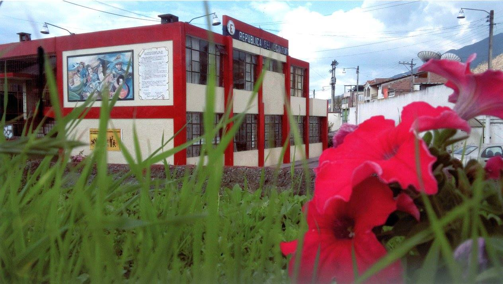

UNIDAD EDUCATIVA "REPUBLICA DEL ECUADOR"

INTEGRANTES:
*JULIO FARINANGO.
*JORDI PERUGACHI.
*ALEX PERUGACHI.
CURSO:
3° INFORMATICA "A".
PROPOCITO:
El propocito de nuestro proyecto es que todas las personas en la actualidad conoscan de como es la "CULTURA
OTAVALEÑA" y asi poder comprtir la informacion con personas extranjeras o con personas de diferentes culturas
para que puedan conocer de como es la cultura de Otavalo, y asi poder crear una atraccion sobre la cultura que
se tiene en nuestro canton OTAVALO
|